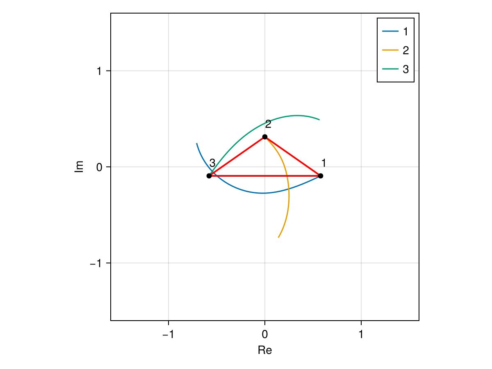

HomotopyResurgence
Documentation for HomotopyResurgence.jl.
The Stokes constants of multidimensional oscillatory integrals
\[\Psi(k) = \left(\frac{k}{2\pi i}\right)^{d/2} \int_{\mathbb{R}^d} e^{i k f(\boldsymbol{x})}\, \mathrm{d}\boldsymbol{x}\]
with a polynomial (or, by a polynomial lift, rational) exponent $f$ are evaluated by homotopy continuation, implemented in Julia. The package starts from a factorisable reference integral, whose Stokes constants follow from one-dimensional integrals, and deforms it into the integral of interest. Along the way, it tracks the saddle points and their Borel singularities and updates the Stokes constants at every higher-order Stokes phenomenon, when the Borel singularity of one saddle point crosses the segment between two others. The method requires neither asymptotic series nor steepest-descent manifolds, and it carries Stokes constants of any magnitude. This code accompanies the publication Stokes Constants through Homotopy (arXiv link to follow), with animations of the homotopies at jfeldbrugge.github.io/Stokes-Constants-through-Homotopy.
Installation
HomotopyResurgence is not yet in the General registry. Install it from GitHub with the Julia package manager. From the Julia REPL, type ] to enter the Pkg REPL mode and run:
pkg> add https://github.com/jfeldbrugge/HomotopyResurgence.jlOr, equivalently, via the Pkg API:
julia> using Pkg; Pkg.add(url = "https://github.com/jfeldbrugge/HomotopyResurgence.jl")The package requires Julia 1.12 or later. The plotting function plotHomotopy lives in a package extension, which loads together with a Makie backend. To draw the figures, install and load CairoMakie (or GLMakie); without a backend, the rest of the package installs and loads without Makie.
Usage
For the Pearcey integral with exponent $f(q) = q^4 + q^2/2 + q$, we compute the saddle points, their Borel singularities and the Stokes constants as follows:
using HomotopyResurgence, CairoMakie # CairoMakie for plotHomotopy
f(q) = q[1]^4 + q[1]^2 / 2 + q[1]
# Homotopy from the reference integral with index m = 4 (m - 1 ≥ deg f'), in N steps
r = stokesHomotopy(f, [4]; N = 4000)
r.x # saddle points: 0.25 + 0.6614im, -0.5, 0.25 - 0.6614im
r.Σ # Borel singularities t = -i f(x): 0.5788 - 0.0938im, 0.3125im, -0.5788 - 0.0938im
r.K # Stokes constants K[j, l] = K_jl (Berry & Howls): the series of j sees saddle l
# 3×3 Matrix{Int64}:
# 0 1 1
# -1 0 1
# -1 -1 0
# The tracks of the Borel singularities and the adjacency graph at the end of the homotopy
fig, ax = plotHomotopy(r.pathsBorel, r.K, 1.6)The figure shows the Borel singularities of the three saddle points as they move from the reference integral to the Pearcey integral. Every pair of saddle points ends up adjacent (red edges).

Please have a look at the Tutorial for a step-by-step discussion, and at the Theory page for the underlying mathematics.
Contributors
This code was written by:
- Job Feldbrugge (jobfeldbrugge@ntu.edu.tw)